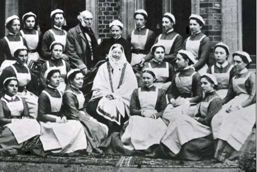

The founder of modern nursing

Florence Nightingale(middle) with her graduationg class of nurses
Here is a time line for Florence Nightingale:
1820 - Bron in Florence, Itally
1821 - Her family moved back to England. Florence and her older sister Parthenope benefited from their fahter's advanced ideas about women's education. Therefore, they studied history, mathematics, Itallian, clasical liteture and philosophy from an early age
1837 - Florence underwent the first several expreinces that she believed were calls from God, prompting a strong desire to devote her life to the service of others
1844 - In her youth years she was respectful of her family's opposition to her working as a nurse, only announcing her decision to enter the field in this year
1847 - In Rome, she met Sidney Herbert, a politican who had been secretary at war. Hebert would be secretary of war again during Crimean war, when he would help her by faciliating Nightingale nursing work in Crimean war
1850 - She visited the Lutheran religious community in Germany and met with its Paster and decided to work fo the sick and deprived
1853 - Nightingale took the post of superindendent at the Institute for the Care of Sick Genttle Woment in London
1854- Florence Nightingale and the staff of 38 women who were volunteer nurses that she trained were sent to the main British camp to help soliders in Crimean war
1860 - Nightingale set up the Nightingale Training school at St. Thomas's hospital
1870 - Nightingale mentored Linda Rihcard, "America's first trained nurse" and enabled her to return to the United States to establish high-quality nursing schools
1883 - Nightingale became first reciepient of Royal Red Cross
1904 - She was appointed a reward called "Lady of Graceof the order of St. John"
1907 - She became the first woman to be awarded the order of Merit
1910 - died peacefully at age of 90
"Live your life while you have it. Life is splendid gift.But to live your life, you must discipline it."
-- Florence Nightingale
If you have time, please check me, Anahita Firoozi, at my FreeCodeCamp!